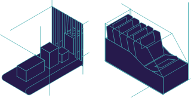

Subscribe to the podcast to receive new episodes as soon as we release them

The floppy disk was one of the greatest breakthroughs in computing. It helped spin up the software industry with a format that endured for decades. And in some cases, it’s conserved treasures once thought to be lost forever.
Before floppy disks came along, computing was weighed down by punch cards and magnetic tapes. Steven Vaughan-Nichols describes the magnitude of the changes brought by the floppy disk. Dave Bennet explains how the need for permanent storage, which was also easily mailable, led to the first 8-inch drives. George Sollman recalls how he was tasked with creating a smaller floppy, and what unexpected sources inspired the next design. And when Sollman showed it to the HomeBrew Computer Club, a couple of this season’s usual suspects asked him to see more. And the rest is history.
Or is it? Matthew G. Kirschenbaum points out that floppy disks are still in use in some unexpected places. And Jason Scott and Tony Diaz tell us how they brought some source code from the sneakernet to the cloud.
00:00 - Saron Yitbarek
Jordan Mechner is a pack rat. He's the creator of games like Karateka and The Prince of Persia. He meticulously saved everything along the way. Journals, sketches, and storyboards. All of it. So it came as a bit of a shock to him when he couldn't find something he'd saved, and that something was a pretty big deal.
00:26 - Saron Yitbarek
Back in 2002, Mechner was working on Prince of Persia: The Sands of Time. The programmers wanted to add the classic version of the game to their PlayStation 2 update as an Easter egg. So they asked him for the original source code. But when Mechner looked in his archives, he couldn't find it. He searched everywhere. The source code that he'd written on his old Apple II, the code he was positive he saved, had vanished.
00:58 - Saron Yitbarek
Fast forward 10 years. Mechner's dad is cleaning house, and buried at the back of a closet is a ratty looking shoebox holding a bunch of dusty old 3.5-inch floppy disks. One is labeled, "Prince of Persia source code. Copyright 1989." And in brackets, in all caps, the word, "Original." The long lost code, found at last. It had sat in that box for a quarter century, before being unearthed like some archeological discovery.
01:36 - Saron Yitbarek
But this was 2012. How would he be able to get it off those old disks, and would the data still be intact? Was it, in fact, too late to save his work?
01:54 - Saron Yitbarek
Saving our work. These days it often happens automatically. With programs regularly pushing stuff into the cloud. We don't worry about manually saving things anymore. In fact, a whole new generation doesn't even know what that save icon represents. Side note: it is not a vending machine.
02:16 - Saron Yitbarek
But for many decades, saving, storing, and transferring our data had to be done using some physical medium. When the personal computing revolution took off, which we heard about in our last episode on the Altair 8800, there was one piece of technology that became synonymous with saving. The floppy disk. It seems so simple now. But floppies changed the course of our history. Because they helped turn microcomputers into personal computers.
02:50 - Saron Yitbarek
I'm Saron Yitbarek, and this is Command Line Heroes. An original podcast from Red Hat.
02:58 - Saron Yitbarek
Let's put a pin in Jordan Mechner's floppy disk discovery for a moment. We'll come back to it. First though, I want to learn how the floppy disk was born in the first place, and how it became such a crucial part of the tech world for almost 40 years.
03:18 - Saron Yitbarek
Our first stop, 1890. Before electronic computers existed, there were electrical mechanical computing devices. The method for getting data in and out of them was through punch cards the size of a dollar bill. When electronic computers came along in the '50s, IBM standardized those punch cards with 80 columns, and 12 rows. A punched hole would form one type of character. No hole meant another.
03:50 - Saron Yitbarek
For a long while, those punch cards were the main method for data input. But handling hundreds of cards for bigger, more complex programs, was hugely cumbersome. There had to be a better way to save and transfer information.
04:08 - Saron Yitbarek
Next up, paper tape. Which came along in the 1950s. To hear how paper tape played a central role in the origin of personal computing, listen to our last episode. Paper tape had the same punched hole method of reading data as punch cards. But because it's all one tape, no one had to worry about getting cards mixed up. It could carry more data, and was much faster to use. But as minicomputers grew in capacity, they needed more and more tape to store programs. Like punch cards, paper tape eventually met its limit.
04:47 - Saron Yitbarek
Enter magnetic tape. The key ingredient was mylar, a tough, flexible material coated with magnetic oxide to make the tape recordable. Nine tracks could store up to 175 megabytes per tape. That was a big deal in the '50s and '60s. Magnetic tape drives of 10.5-inch reels became standard issue for businesses.
05:11 - Steven Vaughan-Nichols
But the problem with tape is that while it's great for moving large chunks of data from one place to another, it's really hard to search on them to find anything in particular. We would install software on our minicomputers and mainframes using tape, but it really wasn't that good for anything small and portable or if we wanted to do anything interactive with our data.
05:40 - Saron Yitbarek
That's Steven Vaughan-Nichols, contributing editor at CBS Interactive. Sure, magnetic tape could store a lot more data. But it was too big and slow. It was only practical for the mainframe world, really. Again, there had to be a better way.
05:58 - Saron Yitbarek
That better way came along in 1956, when IBM launched its very first disk drive—the IBM 350 disk storage unit. It was a component of the 305 RAMAC mainframe computer, a machine that filled an entire room. Here's Dave Bennet, a former IBM disk and storage product engineer.
06:23 - Dave Bennet
There was storage in core memory. In fact, the disk storage device, of which RAMAC was the first, was a storage device that permitted random access to a given record, as opposed to a tape drive.
06:39 - Saron Yitbarek
Interesting thing. That disk drive almost didn't see the light of day, because it threatened IBM's punch card business. But the project was eventually approved. Problem was, the drive contained disks made of solid metal. RAMAC literally weighed a ton. It had to be moved with forklifts, and transported by large cargo planes. Not the most convenient storage method. But out of that, came a better solution.
07:10 - Dave Bennet
While the floppy disk was originally developed for a new need. The reason was that there was an intermediate kind of storage. Originally there was the computer code, and then there was the computer memory, the working memory. But with System 360, there was a new class of memory in between, which they called firmware. In System 360, there was unique technology for the firmware in various forms. It was either a special kind of a punched card, or there was a thing called transformer read-only storage.
07:51 - Dave Bennet
But the new need was the desire to go from these technologies, to semiconductor technology, in the days when semiconductor technology was volatile. That means that the memory in semiconductors went away when the power was removed. So there had to be a way of recharging. Bringing the program back into that memory when the power was restored, for loading what was called a micro program, or that intermediate memory.
08:28 - Dave Bennet
The need for such a device is what caused the development of the floppy disk drive.
08:37 - Saron Yitbarek
So in 1967, a small team of engineers, led by David Noble, started developing an inexpensive system for loading those micro programs into mainframe computers. The codename for their project was Minnow.
08:53 - Dave Bennet
Noble personally went through all the things that he could think of, including various forms of punched cards. Including use of tape cassettes. I don't know what else he went through. But he hit on the idea of using an inexpensive form of disk drive based on a flexible disk, and a very inexpensive read-only mechanism.
09:19 - Saron Yitbarek
The Minnow team wanted to be able to mail their micro program to various locations that needed to load it. So the product for sending that program around had to be durable enough to fly through the mail without having its data damaged. Some kind of casing.
09:38 - Dave Bennet
Now what they actually had to do in order to make it mailable was, they decided to put it in a plastic container that was fairly rigid. They would actually read and write the disk while it was inside of this plastic container, like an envelope. A plastic envelope. When you have a coating on a disk and a rigid head, you're going to have wear. When you have wear, you have wear particles.
10:06 - Dave Bennet
The problem that they had was that as the wear particles built up, it kind of caused an avalanche effect. The particles would act as additional abrasive. Then pretty soon, with the particles being loose in there, you'd wear the recording track out, and it didn't work anymore.
10:28 - Dave Bennet
So a really smart guy that was on that program, a man named Herb Thompson, came up with a plan that was based on a household dusting fabric that 3M sold to housewives for dusting their furniture. He put a sheet of that in there, between the envelope and the disk. That material picked up the wear particles, and they embedded themselves in that fabric, and prevented the avalanche effect, and really saved the day.
11:00 - Saron Yitbarek
Flexible 8-inch mylar disks. One could even call them floppy. It was all housed in a slim but sturdy envelope, with that repurposed, dust-wiping mechanism. Altogether, it was easy to pick up, easy to mail. With a storage capacity of 80 kilobytes, each new floppy disk could hold the same amount of data as 3000 punch cards. A huge leap forward in storage capacity.
11:29 - Saron Yitbarek
IBM released their 8-inch floppy disk in 1971. The Minnow team had done good, but they had no idea how good. Their breakthrough was about to evolve into a totally game-changing technology.
11:49 - Saron Yitbarek
The head of direct access storage products at IBM was a man named Alan Shugart. The Minnow project was his baby. Shugart was quite a character, and entrepreneurial by nature. He wore Hawaiian shirts as his daily uniform, never a jacket and tie. Shortly after the 8-inch floppy was released, Shugart left IBM, joined Memorex in 1969, and then founded his own company in 1973, Shugart Associates. Specializing in computer peripherals.
12:23 - Saron Yitbarek
Don Massaro followed Shugart from IBM, becoming VP of operations at Shugart Associates. A couple of years into that gig, Massaro received a request from a man named An Wang. He was the head of Wang Laboratories, one of the leading computer companies at the time. Wang had come up with a method for magnetic core memory that computers would use for the next 20 years.
12:51 - Saron Yitbarek
When Wang reached out to Massaro in 1975, he gave him a challenge. George Sollman, an engineer at Shugart at the time, remembers.
13:03 - George Sollman
Dr. Wang said, “I really want to do the small business system and word processor, but the disk drives that are out there, your big 8-inch ones are too big. We want a couple of small storage devices. They'll sit next to the CRT, and we can't have the big 8-inch ones, because the magnetic fields will corrupt the image.” So he thought we could take the 8-inch floppy and condense it down. So we knew we had to come up with something that was low cost and we could execute. We put together a plain old garden variety flip chart that described what it was, and we took it back and met with Dr. Wang, who said, “I like it, but you cannot use a motor in it that uses AC current because you're going to distort the image.”
13:52 - George Sollman
So he said, “Why don't you find out who makes the motors for the tape players in, say, the General Motors cars?” So we went back, we implemented some very small motors that would fit in the mini floppy that would drive a belt, that would rotate the diskette.
14:10 - Saron Yitbarek
George Sollman had to figure out the specs of this new floppy disk, how much smaller it should be and what it should hold.
14:19 - George Sollman
What we did is, we looked at all of the tape players at that time, and we figured out their average dimensions. When you get all done with it, you end up with a 5.25-inch diskette size. We knew we’d probably have one time at bat. I think it was when Dr. Wang pulled Don and I into his office said, “Let me show you your disk drives in our new word processor.” And they also wanted to give us an order for some significant amount, 10,000 disk drives. So it was like, wow. We were now there.
14:54 - Saron Yitbarek
Now in historical tech lore, there are a few variations to the story of how that 5.25-inch size came to be. One states that weighing one of the floppy disk to be larger than pocket size to avoid unfortunate bends and breaks. The favorite folk tale takes place in a bar over several drinks with Al Shugart and a eureka moment when he spotted a bar napkin that happened to be 5.25 inches square. Here's Teri Shugart, Al's daughter.
15:26 - Teri Shugart
He liked to drink and what I can tell you is most of his planning in any company he ever started always did take place in a bar. And so it's not unlikely that that might've actually been the case.
15:43 - Saron Yitbarek
But what really changed the game for Shugart and his team, and frankly for all of computing history, came down to one key moment when George Sollman and Don Massaro decided to demonstrate their 5.25 floppy disk at the Homebrew Computer Club.
16:00 - George Sollman
There was a Homebrew Computer Club meeting at the Stanford Linear Accelerator meeting room, which turned out to be about a mile from where we lived. So we brought our mini floppy over and demonstrated it and there was a guy named Steve Wozniak in the audience and Steve wanted to talk to me on it and said, “I've got to have some people pay attention to this.”
16:24 - Saron Yitbarek
After the demo, George and Don went back to their regular routine, but a few days later in the office, Don called him aside.
16:33 - George Sollman
And said, “You're the marketing guy. You're supposed to keep the front lobby clean, George.” And I said, “yes, Don. What's your point?” He said, “We have a bum in the front lobby, we should get him out of here.” So I went out and shook this guy's hands. And he had the most intense eyes, and I talked to him a little bit more and he was very interesting to talk with and he said, “I would like to walk out in the lab with you and see what this thing is that Steve talked about.” I didn't know whether it was legit, but he was one of the more interesting people I've met and it was pretty clear he had a high IQ and a huge curiosity and that was Steve Jobs.
17:19 - Saron Yitbarek
Steve Jobs hated the cassette drives in Apple's early computers. They were always failing and took forever to go back and forth to get information. For the Apple II, he wanted a floppy disk drive and Steve Wozniak wanted to build it, but size was key. The floppy had to be shrunk down to make the computer more compelling to customers. So in a 2-week span over the Christmas holidays in 1977, subsisting mainly on a diet of McDonald's, Woz built the prototype. It was done in time for the new year's Consumer Electronics Show in Vegas.
17:57 - Saron Yitbarek
Woz loved building that floppy drive, describing it as the finest piece of engineering he ever engaged in. Jobs hired Shugart to manufacture the Apple floppy. The disk II became a major hit for Apple, helping drive sales of the Apple II computer and changing the industry. Here's Steven Vaughan-Nichols.
18:20 - Steven Vaughan-Nichols
If you bought an Apple II, this was an option that very quickly became wildly popular. Really, you can give Steve Jobs the credit for being the person to introduce the floppy drive to the PC world. People are running this operating system called CPM 80 and there are literally dozens of small manufacturers and some big ones like DEC making CPM 80 computers and all of these computers use the 5.25-inch floppy drive. And then when IBM comes along in 1981 with the first IBM PC, it has become clear to everyone that this is no longer a hobbyist market.
19:04 - Steven Vaughan-Nichols
This is a real business market and that this business is going to be driven by the newfangled 5.25-inch floppy drives.
19:14 - Saron Yitbarek
The floppy disk and the personal computer revolution were symbiotic. One fueled the other and vice versa. They evolved together. Thanks to the floppy, companies could write programs, copy them onto disks and sell them through the mail or in stores. It did for early PCs what app stores would do for smartphones, opening things up for developers. In fact, the floppy made the whole software industry possible, and as those software programs became larger and more complex, floppies changed again. In 1981, Sony introduced the next evolution of the floppy disk shrunk down to 3.5 inches.
19:59 - Saron Yitbarek
The smaller siblings were encased in hard plastic with a built-in metal shutter to prevent dust from getting in. They were more sturdy and they could store more data. Funny thing, despite their hard case, they were still called floppies and once again it was Apple that made the 3.5s the new standard when they released their new Macintosh computer in 1984.
20:25 - Steven Vaughan-Nichols
Well, we all know about Steve Jobs and Steve Wozniak. The creators of the floppy drives, like Shugart, are not household names by any means, but the work they did was absolutely vital. If it wasn't for that, PCs would have been adopted much more slowly. It's impossible for me to see how the PC revolution could have happened the way it did without these early drives. It just made getting data in and out of computers an order of magnitude easier than it would have been otherwise.
21:06 - Saron Yitbarek
Because floppies were hand-sized and easily shareable, they had a social quality, like an early form of social media. You could meet up with people and trade disks. This was before people had easy access to modems and before the internet was even a thing. People shared floppies full of programs the same way they shared mixed tapes full of Cyndi Lauper tracks. And this way of transferring data even had a name, Sneakernet, because you literally have to use your feet to transport digital information from one machine to another and what people put on those shared disks could be anything, software sure, but so much more, especially with all the new digital creation tools that started to spring up.
21:55 - Saron Yitbarek
Jaime Levy was one of those new digital creators back in the late '80s. She's now a professor at the University of Southern California and the author of the book UX Strategy.
22:07 - Jaime Levy
I certainly thought it was amazing too, that you could make something that was interactive and nonlinear on a floppy disk. I was making what became a diskzine. It was at the same time as desktop publishing. I think PageMaker was coming out. People were just getting Macintoshs and people were slowly gravitating to digital.
22:32 - Saron Yitbarek
No one had ever heard of an interactive zine before, not even Jamie, but she combined animation, art, and sound and an interactive interface and made them fit on a floppy. She made a bunch of copies, packaged them up and took them to a local bookstore.
22:48 - Saron Yitbarek
In most cases, they did not have a Macintosh to even look at them, and so they didn't know what was on them. So I'd say, well here, take 10, take one home and check it out, and if you like it, then sell them. And they would keep them by the front counter because they didn't fit nicely on a rack and then immediately people bought them. As soon as anyone with a Mac walked in there and saw this thing for 6 bucks, they were like, “Yes, I want that thing.”
23:15 - Saron Yitbarek
The bookstores kept selling out. Jaime received letters from around the world and started getting national media attention. Soon she made a business from selling her disks through mail order. Then her career as an interface designer took off. Her story is a testament to the floppy and the power of Sneakernet. There was a time when you could run an entire operating system off a single 160-kilobyte floppy drive, but by the mid '90s you needed multiple floppy disks to run anything. Files got bigger and bigger and it was annoying to do the floppy disk shuffle in and out of your machine.
23:57 - Saron Yitbarek
The writing was on the wall when the 1998 iMac was the first personal computer to ship without a floppy drive. When modems got better and the internet was easier to get on, people moved away from floppies to newer storage technology like the CD ROM and from CDs we moved on to DVDs, SD cards, USB flash drives. Turn around, and there's a whole graveyard of obsolete storage technology behind us. And now we have the cloud. Poor old floppies, they didn't stand a chance. But here's the thing, floppies linger. They have staying power. There's still the save icon for starters.
24:43 - Saron Yitbarek
People still have shoe boxes full of them. Floppies have in fact proven to be one of the most resilient pieces of technology out there. You might be surprised to learn they're still used to maintain the legacy machines like the US Intercontinental Ballistic Missile System. Up until recently, that system relied on 8-inch floppy drives for real. Matthew Kirschenbaum is a professor of English and Digital Studies at the University of Maryland.
25:17 - Matthew Kirschenbaum
So there was a story that was making the rounds about the US Air Force phasing out 8-inch floppy disks from its nuclear command and control systems. And so this was accompanied by pictures of people down in the missile silos plugging floppy diskettes into sort of old style mainframe computers. And I think that surprised a lot of people to see that something like nuclear weaponry was still controlled by 8-inch floppy disks. The government, the military is finally phasing those systems out. And I certainly think that's a good thing, but it's worth remembering, too, that floppies tend to be pretty durable and resilient as storage media goes. They're low areal density, meaning that they're relatively coarse or low-fi as compared to hard drives nowadays. Which actually made them a little bit more resilient, and reliable. They were also, because of the very age, the very obsolescence of those computer systems. They were ironically more protected against some of the kinds of networked threats that we see nowadays in the forms of viruses, and hacking, and that sort of thing. The phrase people used was the “air gap,” and so the floppies were not physically connected to the internet in any way and there's a way to think of that as a pretty desirable security feature. Even though it made people a little bit queasy. It's not completely absurd that they've persisted in use for as long as they have.
26:53 - Saron Yitbarek
Sure. When you look at floppies now, they look flimsy and a bit ridiculous, but with the right equipment, disks from decades ago are still readable today. Who knows what treasures can be found when that data is retrieved.
27:09 - Matthew Kirschenbaum
A couple of years back, there was a press release that there had been a dozen new Andy Warhol images located. It turns out that the images in question were actually digital images that Andy Warhol had created on an Amiga computer back in the 1980s.
27:26 - Matthew Kirschenbaum
He had gotten the Amiga and was experimenting with it and began to use it for some of his artwork and the resulting images were stored on floppies that were at the Warhol Museum in Pittsburgh. A team from Carnegie Mellon University was able to rescue those files, and we now have a dozen additional pieces of artwork by Andy Warhol.
27:53 - Saron Yitbarek
Speaking of treasures, it's time to find out what happened to Jordan Mechner and his long-lost source code. To recap, Jordan lost the original source code for Prince of Persia. Years later, his dad unearthed a shoe box at the back of a closet with a bunch of dusty, 3.5-inch floppies. One was labeled “source code,” but was the source code really on that disk? Would he be able to recover his Prince of Persia work?
28:23 - Saron Yitbarek
To find out, we talked to two people Jordan enlisted as his save-the-code crew. The first person Jordan contacted was Jason Scott. Free range archivist at the Internet Archive.
28:38 - Jason Scott
It was going to work or it wasn't, but you'll always want to prepare for the worst. There's this guy I know and his name is Tony and Tony's relationship to Apple is astounding. He knows them inside and out. I would call him an “Apple II whisperer.”
28:59 - Saron Yitbarek
Via a long running IRC channel, Jason tracked down Tony Diaz and recruited him for the job. Jordan invited this pair of computer archeologists to his home in Hollywood Hills. Tony loaded a bunch of gear into the back of his truck for the long drive from Oceanside to LA.
29:19 - Tony Diaz
I took a couple of Apple IIe systems that I have sitting out, back them up, filled about half the pickup truck bed full of various stuff, and I got disk drives that are modified for reading difficult floppies and various tools like that. Disk drive controller that does things a little differently and some stuff on more modern computer that helps with the floppies if I have to do it. Yup, load it all up and hit the road.
29:43 - Saron Yitbarek
In Jordan's living room. Tony set up an impressive array of vintage Apple II computers and 3.5-inch disk drives. Then Jordan brought out the shoe box in a plastic bag like it was the Holy grail. This grail had rubber bands around it to try to keep the cardboard lid from falling off.
30:03 - Tony Diaz
I've been at the receiving end of this a lot of times where I just crack open the old box of disks, and it's all got that same kind of musty smell that. I don't know, it's hard to describe, but for those people who've been on a Navy ship, they all have the same smell. You go to an airport, the backside of it, they all smell the same. The floppy disks have their own unique, what's the word—luster—to them, anyway.
30:25 - Saron Yitbarek
Tony pulled out a couple of the disks to see what condition they were in. He was ready to take off the protective cover if he had to and clean them with Joy dish soap. The disks hadn't been rotated for a long time. So he put his fingers in the center, gave it a wiggle and rotated it once to check for mold. Then he and Jason split off into two teams.
30:49 - Jason Scott
I was going to do flux readings, which is where you take the magnetic information, pulling every single wavering of magnetic info off of a floppy and that produces a very large and hard-to-decode image of the floppy. The idea was that if anything else went wrong or we were stymied in any single way, that we'd be able to use that in the future.
31:16 - Jason Scott
Tony understood what the information on these disks were and he was using utilities on a machine to read the disk as if it was back in 1990 and the data was something that made sense to him. We went after the disks that were very obviously standard copies of files. Trying to make sure we weren't touching any one-of-a-kind disks until we knew what we were up against. Some of the things that were on these initial simple disks were things like Death Bounce. A game that he made that never came out along with an Asteroids Clone. They worked, and we were able to make them play on the machine and he was looking at games he hadn't even thought about for decades and they were running fine.
32:06 - Saron Yitbarek
So far, so good. Now for the disk labeled Prince of Persia. Tony started analyzing it and realized it was a backup of a hard drive that had been split across five floppies. He needed to put the whole thing back together.
32:23 - Tony Diaz
So to restore those images, you have to have a hard drive volume the same size as the one that you wrote it from. Of course, I brought drives, but what are the odds we're going to have the exact same size because you didn't always. That's okay, I'll make a 10 meg partition on my card here, and I will make a copy of these disks, and I will tell it that you have been backed up from a 10-meg drive. We proceed to restore it and after that get a nice hard drive full of a source code files to go through.
32:50 - Saron Yitbarek
The big reveal happened when they did the first catalog and looked at the files.
32:55 - Tony Diaz
Yup. That's it. Merlin files, they all end in “.s” and there's the OBJ files for when it's compiling or when it's assembling—it's all here. Oh my gosh, there's so many different versions of it we have to figure these out, but all the heads basically turned pretty much concentrated right back towards the monitor and the computer and it was kind of silence more like, okay, here, let's see what's on this one? How about that one? I remember this.
33:20 - Jason Scott
Once he did that, and we started scrolling through the text files that were on that disk, Jordan recognized them immediately as his original source code. So we just kept going through all of the disks even though we knew we had struck gold, just to make sure we weren't missing some other versions. Among the things we found were other work in progresses from Prince of Persia where he had tried different graphics and so on.
33:48 - Saron Yitbarek
Amazing. The moment the team saw the directory with recognizable source code files, they let out a collective sigh of relief. Prince of Persia had been rescued from the sands of time. Their work was not quite done.
34:09 - Saron Yitbarek
Jason uploaded the salvaged code to GitHub where it was instantly accessible to fans from around the world. Word of the event had leaked out and people were logged on and waiting.
34:22 - Tony Diaz
Our main goal that day was to get it uploaded to a repository on GitHub as soon as possible. We were connected in that same IRC chat room the whole time, and we had all kinds of people asking us questions. "What is it? What are you seeing? What do you got?" And we're getting live feedback as we're going.
34:38 - Jason Scott
John Romero who worked on Doom and Quake said that he learned a few tricks looking at the source code and a bunch of other people of course were completely confused as to what they're looking at because a code written in the late 1980s is a lot different than today. The fact that he is byte-by-byte moving memory, trying to clear space so that a Sprite looks like it's supposed to. That's a whole other world.
35:09 - Saron Yitbarek
Since that eventful day back in 2012, the Prince of Persia source code has been studied, shared, commented on, and cherished. Here's Matthew G. Kirschenbaum with some final thoughts.
35:23 - Matthew Kirschenbaum
It's another example of the way in which aspects of what we would think of as digital culture, sort of the artwork of today, the creative expression of our own moment. A lot of it is locked away on these dusty obsolescent floppies, but with a little bit of luck and engineering, there are some pretty remarkable stories that have emerged about how we've gotten things back.
35:49 - Saron Yitbarek
The save icon is as close as some of us ever get to floppies these days, but when you see it, I hope you'll remember that it's part of this amazing history we should never take for granted. A history of sharing and rescuing the things we create. A history of saving.
36:09 - Saron Yitbarek
Command Line Heroes is an original podcast from Red Hat. Check out our floppy disk research notes at redhat.com/commandlineheroes. By the way, if we saved this episode, which is about 51.5-megabytes, we figured it would take 36 3.5-inch floppies. I'm Saron Yitbarek, until next time, keep on coding.
Further reading
The History of Punched Cards by Robert S. Wahl
Alan Shugart: About the Floppy Disk at the Computer History Museum
Oral History Panel on 5.25 and 3.5 inch Floppy Drives by Jim Porter
BUSINESS TECHNOLOGY; The Evolution of the Floppy Disk for PC's by Andrew Pollack
Bonus episode
Moving from punch cards and paper tape to floppies wasn’t straightforward. Hear the story of An Wang, who pushed computer storage technology forward.
Featured in this episode
Get the newsletter
After each episode drops, we'll send you commentary from the Command Line Heroes team, as well as links that help you take a closer look at the topics we cover. It's as simple as that.
Presented by Red Hat
For 25 years, Red Hat has been bringing open source technologies to the enterprise. From the operating system to containers, we believe in building better technology together–and celebrating the unsung heroes who are remaking our world from the command line up.